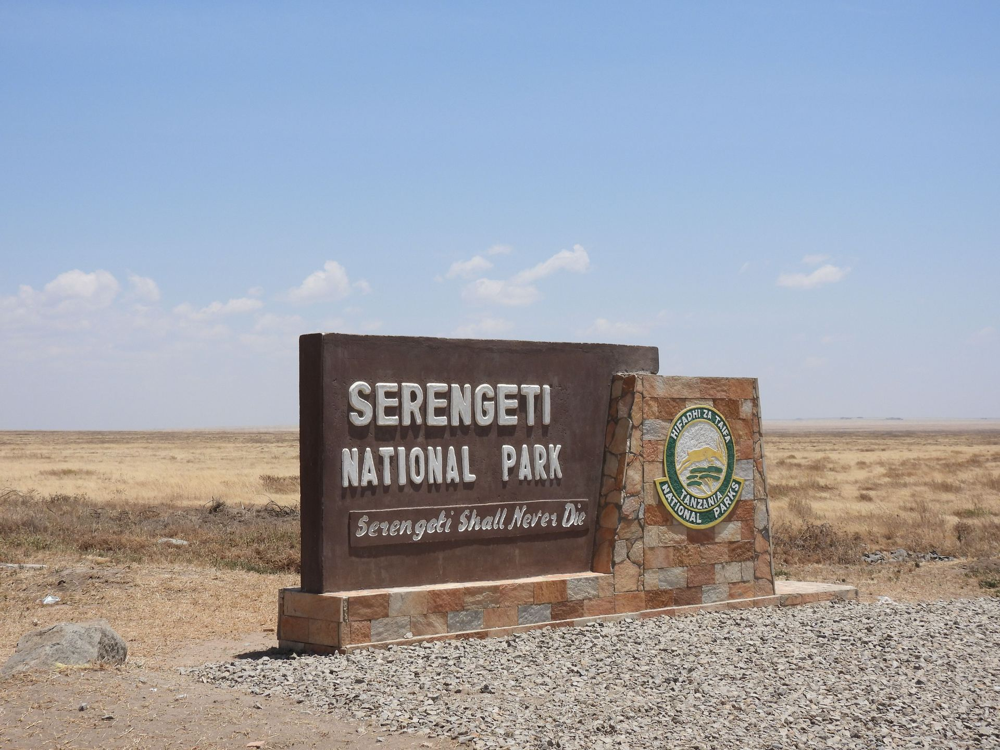
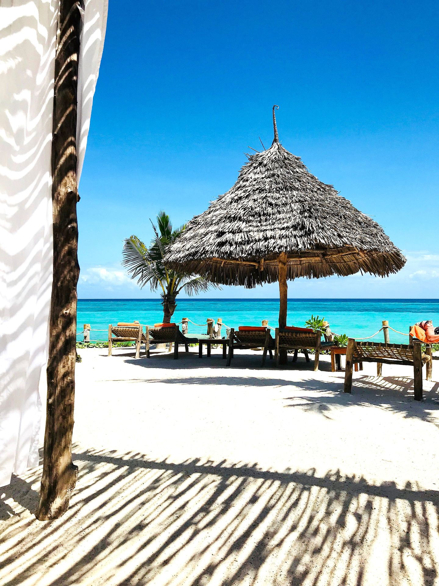

Where Your Safari Takes You

Serengeti National Park
An unbroken sweep of grassland famous for the Great Migration and one of the highest concentrations of large predators in Africa. The scale of the landscape is part of the experience — horizon in every direction.
View Serengeti Safaris
Ngorongoro Conservation Area
A collapsed volcanic caldera enclosing its own self-sustaining ecosystem. The crater floor holds resident wildlife year-round, making it one of the most reliable places in Tanzania to see the "big five" in a single day.
View Ngorongoro Safaris
Tarangire National Park
Known for ancient baobab trees and elephant herds that gather along the Tarangire River in the dry season. Quieter than the Serengeti, with a distinct, dramatic landscape.
View Tarangire Safaris
Lake Manyara
A compact park set beneath the Rift Valley escarpment, with groundwater forest, an alkaline lake shoreline, and a reputation for tree-climbing lions.
View Manyara Safaris
Mount Kilimanjaro
Africa's highest peak, free-standing above the surrounding plains. Several routes to the summit exist, each with a different balance of scenery, traffic and acclimatisation time.
View Kilimanjaro Trek
Zanzibar
White sand beaches, warm turquoise water, and Stone Town's centuries of Swahili, Arab and colonial history. A natural pairing with a northern circuit safari.
View Zanzibar Experience